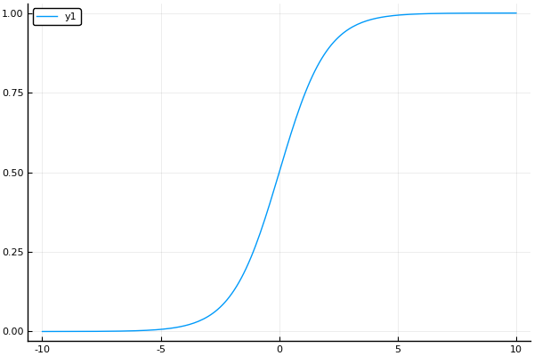

Logistic Regression虽然名字里带“回归”，但是它实际上是一种分类方法，用于两分类问题（即输出只有两种）。需要先找到一个预测函数（h），显然，该函数的输出必须是两个值（分别代表两个类别），所以利用了Logistic函数（或称为Sigmoid函数），函数形式为：
sigmoid(z)=1+e−z1

优点：
- 速度快，适合二分类问题
- 简单易于理解，直接看到各个特征的权重
- 能容易地更新模型吸收新的数据
缺点：
对数据和场景的适应能力有局限性，不如决策树算法适应性那么强
Logistic回归与多重线性回归实际上有很多相同之处，最大的区别就在于它们的因变量不同，其他的基本都差不多。正是因为如此，这两种回归可以归于同一个家族，即广义线性模型（generalizedlinear model）。
这一家族中的模型形式基本上都差不多，不同的就是因变量不同。这一家族中的模型形式基本上都差不多，不同的就是因变量不同。
- 如果是连续的，就是多重线性回归
- 如果是二项分布，就是Logistic回归
- 如果是Poisson分布，就是Poisson回归
- 如果是负二项分布，就是负二项回归
- 寻找危险因素：寻找某一疾病的危险因素等；
- 预测：根据模型，预测在不同的自变量情况下，发生某病或某种情况的概率有多大；
- 判别：实际上跟预测有些类似，也是根据模型，判断某人属于某病或属于某种情况的概率有多大，也就是看一下这个人有多大的可能性是属于某病。
- 寻找h函数（即预测函数）
- 构造J函数（损失函数）
- 想办法使得J函数最小并求得回归参数（θ）
hθ(x)=sigmoid(−θTX)=1+e−θTX1
函数h(x)的值有特殊的含义，它表示结果取1的概率，因此对于输入x分类结果为类别1和类别0的概率分别为：
P(y=1∣x;θ)=hθ(x)
P(y=0∣x;θ)=1−hθ(x)
由于我们知道y只能取0或者1,我们可以把概率写成如下形式：
P(y∣x;θ)=(hθ(x))y(1−hθ(x))1−y
取似然对数为：
L(θ)=i=1∏m(hθ(x(i)))yi∗(1−hθ(x(i)))1−yi
取对数似然有：
l(θ)=log(L(θ))=i=1∑mlog((hθ(x(i)))yi)+log((1−hθ(x(i)))1−yi)
l(θ)=log(L(θ))=i=1∑myilog(hθ(x(i)))+(1−yi)log(1−hθ(x(i)))
求导：
∂θj∂l=∑i=1m(yihθ(x(i))1∂θj∂hθ−(1−yi)1−hθ(x(i))1∂θj∂hθ)=∑i=1m(yig(θTx(i))1−(1−yi)1−g(θTx(i))1)∂θj∂g(θTx(i))=∑i=1m(yig(θTx(i))1−(1−yi)1−g(θTx(i))1)g(θTx(i))(1−g(θTx(i)))∂θjθTx(i)=∑i=1m(yi(1−g(θTx(i)))−(1−yi)g(θTx(i)))xj(i)=∑i=1m(yi−g(θTx(i)))xj(i)=∑i=1m(yi−hθ(x(i)))xj(i)
θj=θj−αm1i=1∑m(hθ(x(i))−yi)xj(i)
考虑牛顿法在求解方程f(θ)=0时的用法。牛顿法在求解方程根时，主要是根据泰勒展示式进行迭代求解的。 假设 f(x)=0 有近似根xk，那么 f(x) 在点 xk 处的泰勒展开式表示为，
f(x)≈f(xk)+f′(xk)(x−xk)
令f(x)=0有，f(xk)+f′(xk)(x−xk)=0，求解得到xk+1
xk+1=xk−f′(xk)f(xk)
类似的，我们求解θ
θ=θ−l′′(θ)l′(θ)
∂θi∂l(θ)=t=1∑m(y(t)−hθ(x(t)))xi(t)
Hij=∂θi∂θj∂2l(θ)=θj∂∑t=1m(y(t)−hθ(x(t)))xi(t)=∑t=1mθj∂(y(t)−hθ(x(t)))xi(t)=∑t=1m−xi(t)∂θj∂hθ(x(t))=∑t=1m−xi(t)hθ(x(i))(1−hθ(x(i)))θj∂(θTx(t))=∑t=1mhθ(x(t))(hθ(x(t))−1)xi(t)xj(t)
θnew=θold−HU=θold−H−1U
其中H位
X=⎣⎢⎢⎡x(1)⋮x(m)⎦⎥⎥⎤=⎣⎢⎢⎡x11⋮xm1……x1n⋮xmn⎦⎥⎥⎤Y=⎣⎢⎢⎡y1⋮ym⎦⎥⎥⎤θ=⎣⎢⎢⎡θ1⋮θn⎦⎥⎥⎤
Y^=Xθ=⎣⎢⎢⎡x11⋮xm1……x1n⋮xmn⎦⎥⎥⎤⎣⎢⎢⎡θ1⋮θn⎦⎥⎥⎤=⎣⎢⎢⎡θ1x11⋮θ1xm1……θnx1n⋮θnxmn⎦⎥⎥⎤
E=hθ(X)−Y=⎣⎢⎢⎡hθ(x(1))−y1⋮hθ(x(m))−ym⎦⎥⎥⎤
θ=θ−αXTE
A=⎣⎢⎢⎢⎢⎡hθ(x(1))⋅[hθ(x(1))−1]0⋮00hθ(x(2))⋅[hθ(x(2))−1]⋮0⋯⋯⋱⋯00⋮hθ(x(m))⋅[hθ(x(m))−1]⎦⎥⎥⎥⎥⎤
U=−XTE=⎣⎢⎢⎢⎢⎡x11x12⋮x1nx21x22⋮x2n⋯⋯⋱⋯xm1xm2⋮xmn⎦⎥⎥⎥⎥⎤⎣⎢⎢⎢⎢⎡y1−hθ(x(1))y2−hθ(x(2))⋮ym−hθ(x(m))⎦⎥⎥⎥⎥⎤
H=XTAX
θnew=θold−HU=θold−H−1U